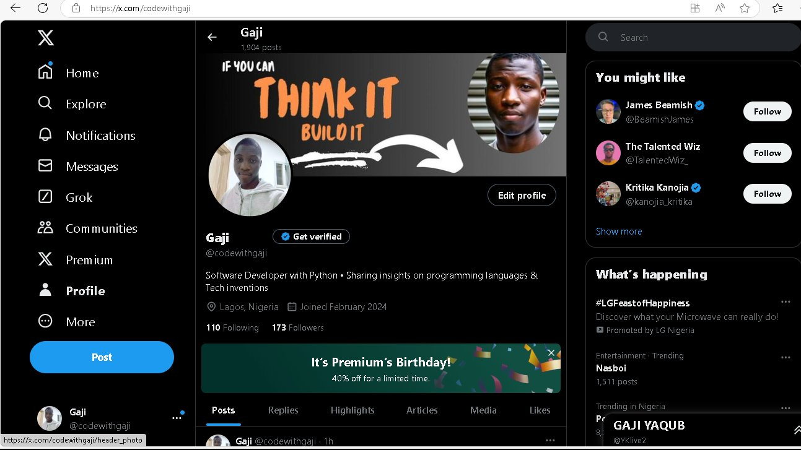

Hey there!
I'm Gaji Yaqub Ayomikun,

A tech enthusiast and Computer Science student at Lagos State University (LASU).
My journey in tech began with Python, HTML, and CSS, and it has expanded into exploring advanced programming concepts,
systems management, and creating optimized solutions. I'm passionate about learning, growing, and making a meaningful impact in the tech space.
As a Software Developer with Python, I enjoy solving tricky problems, crafting efficient code, and sharing knowledge.
I also love experimenting with web development, diving into the intricacies of design and functionality.
My goal is to continuously improve and inspire others to do the same.
I’m actively building a community of tech enthusiasts on X (formerly Twitter), where I share coding tips, host discussions,
and support programming newbies.

I'm all about collaboration and would love to connect with like-minded individuals for internships, projects,
and impactful partnerships.
Join me as I share my journey, grow my skills, and work towards creating innovative solutions while building a supportive tech ecosystem.
Let’s collaborate and make a difference!